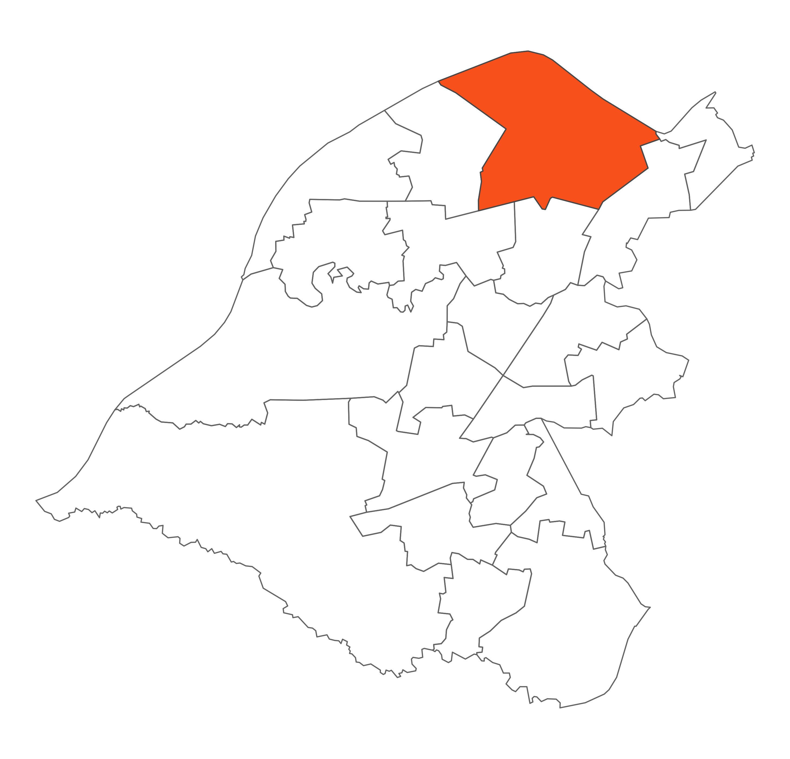

 Gorse Hill is the northern most ward in Trafford. It is the third largest ward in area size, and contains the Trafford Park Industrial Estate. The majority of population are located within the ward's southern edge. The residential neighbourhoods within this area include Lostock to the west, the northern tip of Stretford in the south, together with Gorse Hill itself, straddling its Chester Road spine in the south eastern edge of the ward. The ward is home to the famous Manchester United Football Club as well as Trafford Town Hall.
The Media City development located on the Salford side of the Canal involving the BBC is generating significant development on the Trafford side, and Gorse Hill is also home to the iconic Coronation Street studio.
The area has also benefitted from a new housing development and shops in the Lostock area. Remaining Lostock Fair Share funding was allocated to Asset Based Community Development (ABCD).
Trafford Park and Humphrey Park railway stations serve the ward for commuting to both Manchester and Liverpool.